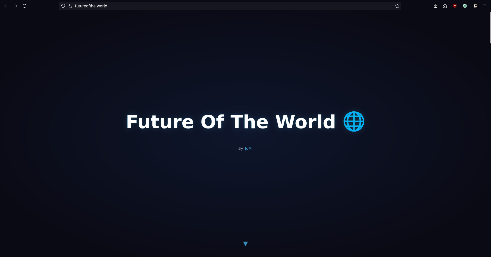
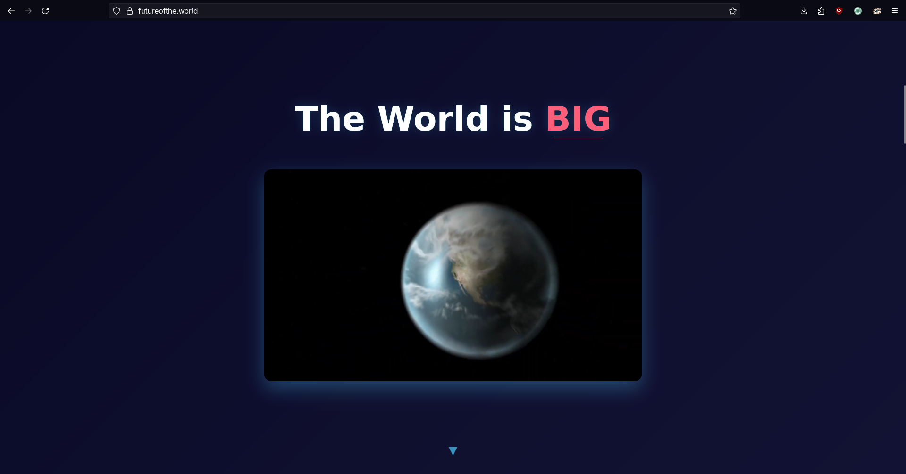
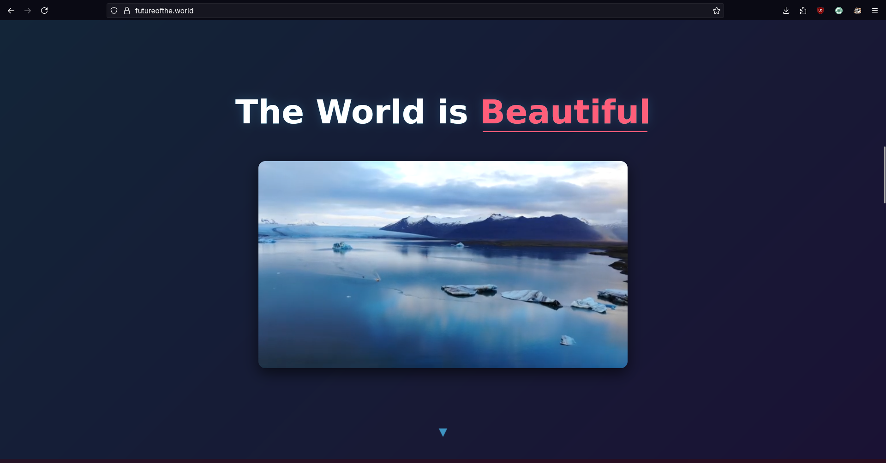
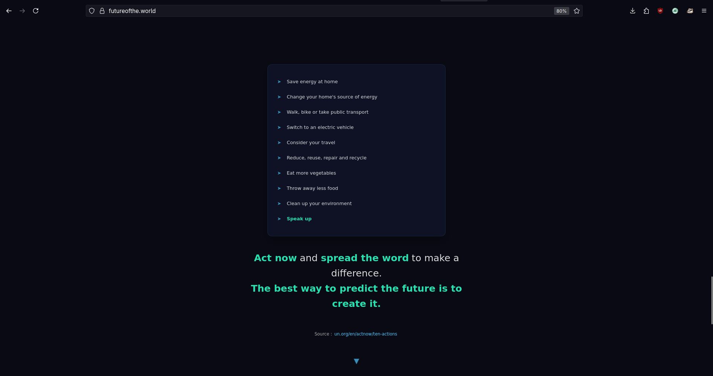

Can a Website Save the WORLD ?
It all started in front of a drinks vending machine. I was with my friend DouxxPi, and he was thirsty but had no money. Any nice person would probably have bought their friend a drink. But I didn’t,,.
I told him that, in exchange, I’d like him to buy me a domain name. And that’s how I got the FutureOfThe.World domain.
I already had the domain futureofthe.tech, which I use as my presentation site for my projects and blogs. It's to adopt a more global vision that I chose the domain FutureOfThe.World.
I had the domain, but I didn’t really know what to do with it. What can you even put on a website that’s supposed to predict the future of the world?

Our World
To imagine the future of the world, you first have to understand what the world is like today. And that’s not so easy.
The world is big.

You probably already knew that. But can you really imagine just how big?
No, you can't.
You know the world is big — or maybe even very big — but it’s impossible to truly grasp its actual size.
The earth measures 510.1 million km². It's a huge number and very difficult to imagine. But when I say the world is big, I'm not just talking about its surface area.These 510.1 million km² are home to around 8 million people: 8 million ideas, 8 million lives, 8 million dreams, 8 million humans. Not just humans, but hundreds of billions of other living beings, each with their own roles in the natural ecosystem.
So yes. The world is big.
The World is beautiful.

Our big world is beautiful. From human constructions to natural landscapes, our world is beautiful.
It is not only visually beautiful but also in every other sense of the term. Human civilization is something magnificent, which we have spent thousands of years building. Certainly, the world is filled with war, misery, and many other horrible situations. But not only that. There are also beautiful projects, successes, and goodwill in the world. This is what makes the world beautiful, what it has to offer us, and what humanity bring to it.
FutureOfThe.World
Perhaps I was too ambitious in choosing to create a site on the future of the world. Because the reality is that I can't predict the future. I can't because the world is a big place and I can't predict the behavior of 8 billion people.
But in this case... What to do with this site? What's the point of a site called FutureOfTheWorld if it can't even tell you the future of the world ?
The best I can do is take the current data and analyze what might happen in the future if that data follows its current trajectory.
If we, the humans of Earth, do not change our way of life, and if scientific estimates are confirmed, then the Earth, or at least a large part of it, will no longer be viable. And it's not just the future, it's already happening. Extreme weather events multiply, parts of the Earth become uninhabitable, and lives are lost. This is just the beginning. It's not just about a hot summer, but also about people dying.
So is this the purpose of FutureOfThe.World? To explain how thousands of years of development of our human civilization are being destroyed in less than a century? And how are we all going to pay the price for our stupidity ?
- No.
Because we cannot predict the future, but we can create it.
Knowing the problem is only the first step. Now it's time to find solutions. There are plenty of political theories on how to stop global warming. Unfortunately, it's very difficult to say what the best thing is for our governments to do.
That's why I won't be talking about political solutions on FutureOfThe.World. It's actually not that complicated. If a large part of the global population agrees to take some actions, it will be enough to sustainably limit the unfolding catastrophe. That's why I chose to include on FutureOfThe.World a list of individual actions that you yourself can take.

You may think it's useless, because part of the population won't make the effort, and because you alone won't have any impact. But that's not true. Firstly, because if everyone looks at people worse than us, no one will change. Secondly, even you alone have an impact; your actions help to slightly reduce the crisis, which will already save a small part of the world. And if you are someone who makes an effort in this challenge, it will motivate your friends to do the same, who in turn will motivate their friends, ultimately establishing a new way of life on a large scale.
Can my Website Save the WORLD ?
The answer is no. My site isn't going to save the world. Because it's not my site that over-consumes, pollutes and emits greenhouse gases. It's us. My site can't save the world, but it can tell you that it's still possible.